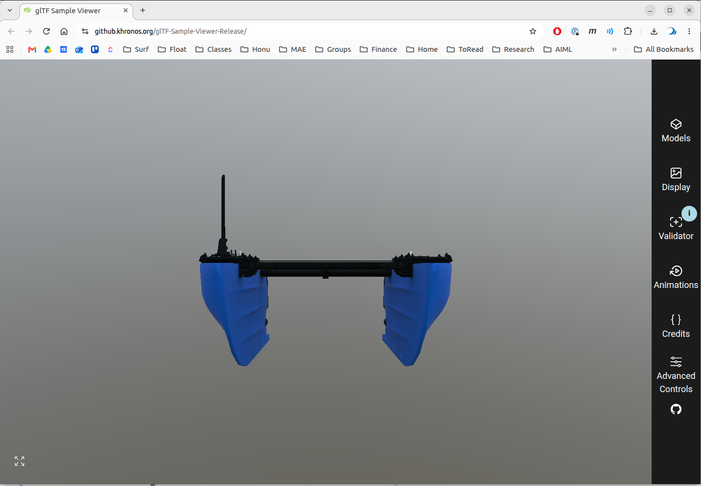
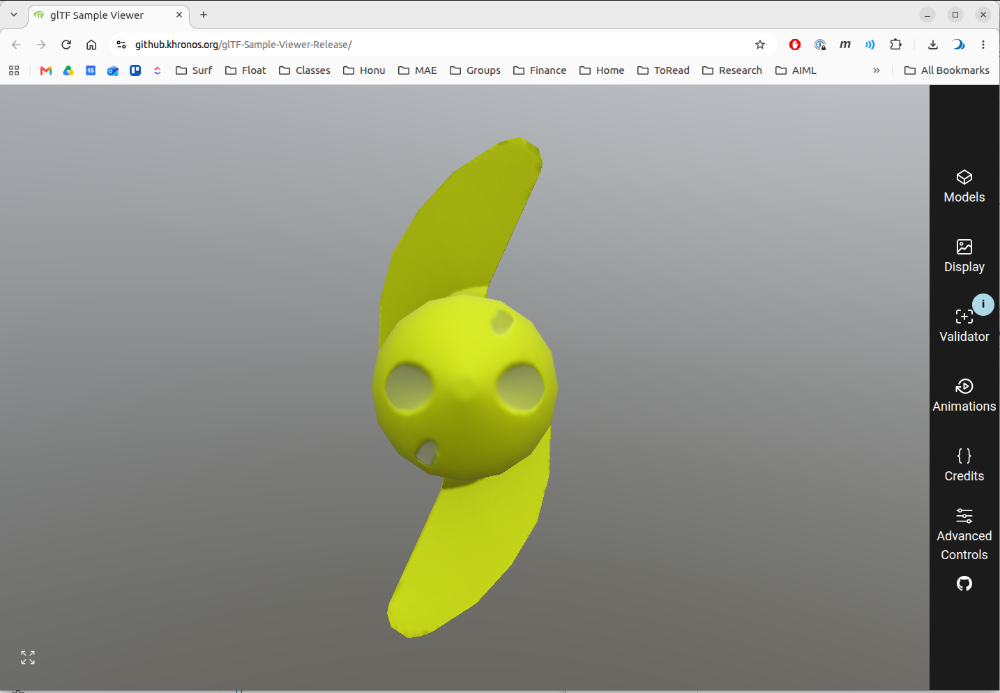

BlueBoat gltf Walkthrough
This page documents the workflow applied to the BlueBoat USV model in the bluerobotics_models]() repo. The purpose is to illustrate the workflow applied to a minimal exaple.
Step 1: Commission
The commission contains three parts.
The commission gets it’s own PR - https://github.com/HonuRobotics/bluerobotics_models/pull/84
Step 3: Fill the manifest from the commission
The integrator uses gltf_robotics.manifest and the commission YAML file to write the meta data manifest into each delivered file. from the commission.
The inputs are the commission bluerobotics_parts/commissions/commission-blueboat.yaml from PR #84 and the three <part>_visual.glb files from PR #83. The step runs once PR #84 is approved, on PR #83’s branch, so the stamped files land in the delivery PR.
From the bluerobotics_models root, with the commission available on the branch:
GLTF=~/maritime_ws/tools/gltf-robotics
M=bluerobotics_parts/models
PYTHONPATH=$GLTF/src python3 -m gltf_robotics.manifest \
bluerobotics_parts/commissions/commission-blueboat.yaml \
$M/blueboat_chassis/blueboat_chassis_visual.glb \
$M/m200_weedless_prop_cw/m200_weedless_prop_cw_visual.glb \
$M/m200_weedless_prop_ccw/m200_weedless_prop_ccw_visual.glb
With gltf-robotics installed (pip install -e ~/maritime_ws/tools/gltf-robotics), gltf-manifest replaces the PYTHONPATH=… python3 -m gltf_robotics.manifest prefix.
The command finds each part’s block by the file name (<part>_visual.glb → <part>), so the commission’s part keys must match the delivered names exactly. A dry run on 2026-10-17 with the PR #84 and PR #83 heads, writing to a scratch directory with -o, gave:
blueboat_chassis_visual.glb: manifest written, 11 properties, role base
m200_weedless_prop_cw_visual.glb: manifest written, 10 properties, role component
m200_weedless_prop_ccw_visual.glb: manifest written, 10 properties, role component
If the commission changes during review (for example, the prop datum Ryan is asked to check in PR #84), edit the YAML and rerun the same command; no re-export is needed.
Carried to Step 4, from gltf-summary on the same files:
Each prop file holds both props: two scenes,
m200_weedless_prop_cwandm200_weedless_prop_ccw, differing only in which one the file opens. A delivery is one part per file.Node names use the old suffix,
<part>.visual, in all three files.Chassis extent along glTF +Z (forward) is 1.192 m, against the commission’s 1.20 m length overall. Prop extent along glTF +Y is 0.111 m, against 112 mm diameter.
Prop origin reads
x 0.50, y 0.50, z 0.46, close to the bounding-box midpoint, where the commission’s datum is the hub’s mating face. Check it against the datum in the Sample Viewer and Gazebo.
Step 4: Verify
Valid? Test with Khronos CLI gltf_validator
Run the validator tool on all three delivered glb files. For example, for the cassis part…
cd /home/bsb/maritime_ws/src/bluerobotics_models/bluerobotics_parts/models/blueboat_chassis
gltf_validator -o -a blueboat_chassis_visual.glb
Results in
/home/bsb/maritime_ws/src/bluerobotics_models/bluerobotics_parts/models/blueboat_chassis/blueboat_chassis_visual.glb
Errors: 0, Warnings: 1, Infos: 0, Hints: 0
Time: 16ms
Warnings:
/meshes/0/primitives/0/material: Material requires a tangent space but the mesh primitive does not provide it. Runtime-generated tangent space may be non-portable across implementations.
...
The three delivered files from PR #83:
File |
Errors |
Warnings |
Infos |
|---|---|---|---|
|
0 |
1 |
0 |
|
0 |
2 |
0 |
|
0 |
2 |
0 |
All three are valid glTF: the gate is zero errors.
The tangent space warnings are expected and accepted because:
Every warning is MESH_PRIMITIVE_GENERATED_TANGENT_SPACE. These warnings are expected and acceptable:
A normal map stores its directions in tangent space, so the renderer needs a tangent at each vertex to apply it. glTF lets the file carry those tangents as a
TANGENTattribute; when it does not, the renderer generates them itself, and the validator warns that generated tangents can differ between implementations.Blender writes no tangents unless the exporter’s Tangents option is on
Neither Gazebo nor RViz reads them (Geometry), so the warning is expected and is accepted with this explanation.
Run on the files after Step 3, the validator adds one info, UNSUPPORTED_EXTENSION for KHR_xmp_json_ld: the validator cannot check the manifest’s extension, which is expected. The manifest itself is checked by gltf-check.
Why two (not one) errors for the prop files?
The duplicate warnings for the prop files are because each file is actually almost identical and each file contains. Each file contains BOTH mesh files (CW and CCW). Each prop file contains two scenes…
m200_weedless_prop_*_visual.glb:
scene[0] 'm200_weedless_prop_ccw'
└─ node[0] 'm200_weedless_prop_ccw.visual'
└─ mesh[0] 'Cylinder.004'
└─ primitive[0] ── material 'Prop-CCW-Mat' ← warning 1
★ scene[1] 'm200_weedless_prop_cw'
└─ node[1] 'm200_weedless_prop_cw.visual'
└─ mesh[1] 'Cylinder.007'
└─ primitive[0] ── material 'Prop-CW-Mat' ← warning 2
The CCW glb opens the first scene. The CW glb also contains both scenes, but opens the second scene.
This means we have the same information twice. This also means that the files should fail future tests we check for compliance with the profile which requires one and only one scene per file to avoid this.
Intended? Visual check with Khronos sample viewer in browser
This is a qualitative test and requires human evaluation of the visuals.
Drag and drop the individual
.glbfiles to upload to toolChecks
The default, initial view should show the front view of the model and the up direction of the model should be up. This is key because it verifies that the orientation of the mesh is consistent with the profile coordinate conventions.


Also rotate, zoom, etc. to visually expect.
Compliant? Custom gltf-check to enforce [profile]
gltf-check tests each file against the profile and passes when there are no FAIL lines and every WARN is understood. gltf-summary describes what is in the file, and its origin at line is checked against the commission’s datum. How to read the gltf-check output is in Checking a delivery.
Here both run on the files as delivered in PR #83, before Step 3 has written the manifest, because the commission (PR #84) is not yet merged. The manifest test therefore FAILs, and the Units test is OPEN because no dimension is cited; both are decided once Step 3 has run. For the chassis:
GLTF=~/maritime_ws/tools/gltf-robotics
cd ~/maritime_ws/src/bluerobotics_models/bluerobotics_parts/models/blueboat_chassis
PYTHONPATH=$GLTF/src python3 -m gltf_robotics.check.cli blueboat_chassis_visual.glb
(Can also run PYTHONPATH=$GLTF/src python3 -m gltf_robotics.check.cli -h for cli options.)
PYTHONPATH=$GLTF/src python3 -m gltf_robotics.summary blueboat_chassis_visual.glb
For the props:
```bash
cd ~/maritime_ws/src/bluerobotics_models/bluerobotics_parts/models/m200_weedless_prop_cw
PYTHONPATH=$GLTF/src python3 -m gltf_robotics.check.cli m200_weedless_prop_cw_visual.glb
PYTHONPATH=$GLTF/src python3 -m gltf_robotics.summary m200_weedless_prop_cw_visual.glb
cd ../m200_weedless_prop_ccw
PYTHONPATH=$GLTF/src python3 -m gltf_robotics.check.cli m200_weedless_prop_ccw_visual.glb
PYTHONPATH=$GLTF/src python3 -m gltf_robotics.summary m200_weedless_prop_ccw_visual.glb
With gltf-robotics installed, gltf-check and gltf-summary replace the PYTHONPATH=… python3 -m … prefixes. gltf-check -q drops the PASS and SKIP lines, -v lists every test with its full reason, and gltf-summary --explain appends how to read its output.
Every gltf-check run also writes the full record as Markdown to gltf-check-output.md in the current directory (--report FILE.md puts it elsewhere). For the whole delivery at once, the report has a matrix of the three parts side by side, then each file’s tests, reasons and scene/node/mesh tree:
cd ~/maritime_ws/src/bluerobotics_models/bluerobotics_parts/models
PYTHONPATH=$GLTF/src python3 -m gltf_robotics.check.cli \
blueboat_chassis/blueboat_chassis_visual.glb \
m200_weedless_prop_cw/m200_weedless_prop_cw_visual.glb \
m200_weedless_prop_ccw/m200_weedless_prop_ccw_visual.glb
Results: